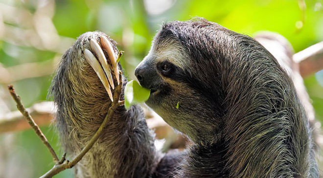

In 1991, after a lifetime of biological research, the scientist Lynn Margulis published Symbiosis as a Source of Evolutionary Innovation[1]. Much of Margulis’ work focused on the principle of symbiosis, which she proposed emerges when individuals from one species engage with individuals from another species, over a sufficient period of time. Rather than centering biology around the premise of individual organisms, her work focused on their interaction in emergent, mutualistic systems.
In Margulis’ formulation, each individual species in the system (e.g. you, or the lactobacillus in your gut) is a “biont,” and she coined the phrase “holobiont” to describe the association formed when bionts from different species engage with one another over their lifetimes. Margulis’ first use of holobiont referred to coral/zooxanthellae symbiosis, wherein the zooxanthellae live in coral cells and provide nutrients to the coral for as long as it lives. Take away the coral biont, and the zooxanthellae perish. Take away the zooxanthellae bionts (which, sadly, is happening) and the coral dies quickly. Margulis recognized that we needed a new word and a new framework to understand and describe organisms as systems, rather than as individuals.

Coral, as we experience it, is not an organism in itself, but rather a system of interactions between varius species
At a cellular level, Margulis first explored this in The Origin of Eukaryotic Cells [2]arguing that even the existence of nucleated cells is the product of symbiotic exchange over time. This was an elaboration of hypotheses from Schimper, Mereschkowsky, Wallin and others from earlier in the 20th century, suggesting that the organelles that distinguish eukaryote cells evolved from the symbiosis of individual single-celled prokaryotes. Margulis argued that mitochondria, plastids, and other eukaryotic organelles may represent formerly independent prokaryotes that were absorbed over one billion years ago. At fundamental levels of life, it is a shift to think of the ecosystem as evolving not strictly through mutation, but through cooperation and interaction between species.
This scales up, of course. The forest ecologist Suzanne Simard frames trees as “stands” -- the part of a vast mycorrhizal network that is visible to humans. The action, in Simard’s worldview, is not in how any tree grows, but rather how it interacts with the other trees (e.g., transmitting carbon to one another) and the ways that it interacts with the fungal threads below ground. Simard’s research reveals that the fungal threads form a mycelium that infects the trees and plants, trading carbon for nutrients. Each tree, in Margulis’ model, is a biont. The holobiont is the tree plus the other trees plus the mycelium, all of which keep one another alive.
The sloth, as we experience a sloth, is not an organism in itself, but rather a system of interactions between varius species
These symbiotic relationships extend from cells to flora to fauna; the three-toed sloth is one of the most vivid examples. Two mysteries present themselves when you consider the three-toed sloth as a species: how does it get enough food up in the trees, and why does it foolishly descend to the ground in order to defecate? To answer these questions, you need to examine the sloth holobiont, which includes the pyralid moths that infest its fur. The moths feed on the sloth’s secretions, and are in turn eaten by the sloth (providing the sloth with nutrients it cannot gain otherwise). When the sloth descends to poop, what it’s really doing is giving the moths on its skin access to the dung, so that these moths can lay eggs within it. When the eggs hatch, those moths will infest the sloth on the next trip down the tree, and so on.
Symbiotic exchange is true for all organisms at all scales, in varying degrees. As humans, we are only beginning to consider the vast empire of other organisms that live within us: 10,000 different species in any given gut, helping to shape our experience of the world for a day, or a lifetime. When science promised that sequencing the human genome would unlock certain mysteries of human existence, it turns out that — of course — who we really are is the interaction between our own genetic material and the genes of the different species that live inside us. We ourselves are now understood to be “bimolecular networks,” the collective genomic content of a host and its microbiome.
Like heliocentrism and evolution, reframing humans as holobionts is a challenge to the privilege not just of the individual, but to the notion of species. What if being human is about being much more than homo sapiens? What if obesity is not about willpower or discipline, but rather about the interactions between our own species and many others? The same goes for depression, anxiety, autism and memory loss. Have we erred by defining the human experience with too great a bias on our own species?
Margulis was concerned with reframing the scientist’s worldview in terms of symbiotic exchanges. But far beyond the biologist’s view, this framework that is shifting how we see the rest of the world: at large, to scale, and in its tiniest minutiae. Cities can be viewed through this lens, as can the notion of culture. It doesn’t just remove the individual from the center; it also removes the idea of the center...

Cities, as we experience them, have human participants, but participants who are far outnumbered by a vast, consequential, and invisible empire of life, in constant symbiotic exchange with humans.
Citations
[1] Margulis, L. & Fester, R. (1991). Symbiotic as a source of evolutionary innovation: speciation and morphogenesis. MIT Press.
[2] Margulis, L. (1970). Origin of Eukaryotic Cells: Evidence and Research Implications for a Theory of the Origin and Evolution of Microbial, Plant, and Animal Cells on the Precambrian Earth. Yale University Press. Retrieved from https://books.google.com/books?id=mrBzQgAACAAJ